Ведомственные строительные нормы
ПРИМЕНЕНИЕ
ГРУППОВОЙ УСТАНОВКИ
ЖЕЛЕЗОБЕТОННЫХ УТЯЖЕЛИТЕЛЕЙ
ТИПА УБО
С ИСПОЛЬЗОВАНИЕМ БАЛЛАСТИРУЮЩЕЙ
СПОСОБНОСТИ ГРУНТА
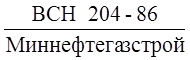
МИНИСТЕРСТВО
СТРОИТЕЛЬСТВА ПРЕДПРИЯТИЙ
НЕФТЯНОЙ И ГАЗОВОЙ ПРОМЫШЛЕННОСТИ
ВСЕСОЮЗНЫЙ
НАУЧНО-ИССЛЕДОВАТЕЛЬСКИЙ ИНСТИТУТ
ПО СТРОИТЕЛЬСТВУ МАГИСТРАЛЬНЫХ ТРУБОПРОВОДОВ
МИНИСТЕРСТВО ГАЗОВОЙ ПРОМЫШЛЕННОСТИ
ЮжНИИгипрогаз
Москва 1986
РАЗРАБОТАНЫ И ВНЕСЕНЫ Всесоюзным научно-исследовательским институтом по строительству магистральных трубопроводов (ВНИИСТ) Миннефтегазстроя
К.И. Зайцев - канд. техн. наук, зам. директора
Н.П. Васильев - канд. техн. наук, зав. отделом
В.Г. Ткачев - канд. техн. наук, зав. лабораторией
В.Е. Поляков - канд. техн. наук, ст. научн. сотр.
А.Д. Решетников - канд. техн. наук, ст. науч. сотр.
И.Е. Михайленко - канд. техн. наук, ст. науч. сотр.
А.Б. Айнбиндер - канд. техн. наук, зав. лабораторией
В.Н. Арсеньев - ст. инженер
Г.А. Горохова - мл. науч. сотр.
С.В. Твердомед - мл. науч. сотр.
ЮжНИИгипрогазом Мингазпрома
Е.В. Ермолаев - нач. отдела
Н.Н. Желудков - гл. специалист
В.С. Сумароков - гл. конструктор
Гипроспецгазом Мингазпрома
Л.H. Суворов - нач. отдела
Ю.Н. Иванов - гл. специалист
Главвостоктрубопроводстроем Миннефтегазстроя
Е.Г. Елизарьев - нач. управления
Трестом Севертрубопроводстрой Миннефтегазстроя
В.А. Шукаев - зам. управляющего
ЦНИИИСом Госстроя СССР
Т.В. Нефедова - мл. науч. сотр.
ПОДГОТОВЛЕНЫ К УТВЕРЖДЕНИЮ Главным техническим управлением Миннефтегазстроя
И.В. Машков - нач. отдела
СОГЛАСОВАНЫ Главным техническим управлением Миннефтегазстроя
О.М. Иванцов - д-р. техн. наук, начальник управления
Техническим управлением Мингазпрома
Э.Я. Вольский - гл. инженер управления
Управлением проектных и изыскательских работ Мингазпрома
Управлением капитального строительства Мингазпрома
А.М. Гершман - главный инженер управления
|
Министерство строительства предприятий нефтяной и газовой промышленности |
Ведомственные строительные нормы |
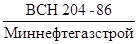 |
|
Применение
групповой установки железобетонных утяжелителей типа |
Впервые |
1.1. Настоящие Ведомственные строительные нормы распространяются на проектирование и строительство магистральных и промысловых трубопроводов в условиях обводненной и заболоченной местности для обеспечения их устойчивого положения на проектных отметках путем применения групповой установки железобетонных утяжелителей типа УБО с использованием балластирующей способности грунта.
1.2. Ведомственные строительные нормы разработаны в развитие глав СНиП 2.05.06-85 «Магистральные трубопроводы. Нормы проектирования» и СНиП III.42-80 «Магистральные трубопроводы. Правила производства и приемки работ» и регламентируют вопросы, связанные с использованием балластирующей способности грунта в сочетании с железобетонными утяжелителями.
1.3. Балластировка трубопроводов утяжелителями типа УБО с использованием балластирующей способности грунта применяется на периодически обводняемых участках трассы, включая поймы рек, а также на обводненных и заболоченных участках, болотах всех типов глубиной 1,5 - 2,5 м, вечномерзлых грунтах и торфяниках при уровне обводненности траншеи в период строительства ниже верхней образующей трубопровода, уложенного на проектные отметки приложением сосредоточенной нагрузки или проведением водоотливных работ с устройством грунтовых перемычек и т.д. При невозможности осуществления водоотлива и указанных мероприятий балластировка осуществляется одиночными грузами-утяжелителями.
1.4. Балластировка трубопровода утяжелителями типа УБО с использованием дополнительной балластирующей способности грунта применяется для трубопроводов диаметром до 1420 мм включительно преимущественно на прямолинейных участках. Возможно применение способа и на криволинейных участках трассы в вертикальной и горизонтальной плоскостях с расположением грузов в вершине угла. Для уменьшения напряжений в вершине вертикального угла и повышения надежности предпочтительна балластировка с переменным шагом в соответствии с эпюрой напряжений металла.
1.5. Утяжелители типа УБО или других конструкций, используемые для группового метода балластировки трубопроводов, должны соответствовать требованиям ОСТ 102-99-85 «Утяжелители железобетонные для трубопроводов. Общие технические требования», а также Техническим условиям ТУ 102-300-81 «Утяжелители сборные железобетонные охватывающего типа УБО». Для обеспечения сохранности изоляционного покрытия трубопровода блоки утяжелителей в месте контакта с трубой оснащаются защитными накладками из НСМ, армобутила и т.д.
1.6. При групповом методе монтажа утяжелителей с использованием дополнительной балластирующей способности грунта следует преимущественно применять железобетонные утяжелители типа УБО-М, конструкция которых позволяет осуществлять сплошную (беззазорную) их установку на трубопроводе; возможно применение и других конструкций грузов-утяжелителей с образованием вмещающей полости для грунта.
1.7. Во избежание утечек грунта из
полости, образованной группой утяжелителей типа УБО или других конструкций
через зазоры между утяжелителями, необходимо предусматривать мероприятия,
препятствующие этому, например, выстилка нетканого синтетического материала 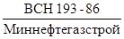
1.8. В качестве заполнителя при балластировке трубопроводов утяжелителями типа УБО следует применять минеральные грунты, имеющие большую объемную массу, устойчивую структуру и высокий коэффициент фильтрации.
1.9. Применение балластировки трубопроводов утяжелителями типа УБО с использованием дополнительной балластирующей способности минерального грунта засыпки позволит:
снизить расход железобетона в зависимости от физико-механических характеристик применяемых грунтов;
сократить объемы земляных работ;
повысить темпы и качество строительно-монтажных работ, а также сократить сроки строительства.
|
Внесены ВНИИСТом, ОЭР |
Утверждены Миннефтегазстроем 14 апреля 1986 г. Утверждены Мингазпромом 20 мая 1986 г. |
Срок введения в действие |
2.1. При групповой установке железобетонных утяжелителей типа УБО в суммарную расчетную нагрузку на трубопровод, действующую вниз, следует включать массу грунта, находящегося между утяжелителями и трубопроводом (рис. 1).
При проверке устойчивости положения (против всплытия) трубопроводов расчетная удерживающая нагрузка gргр от этой массы грунта определяется по формуле
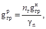
где nг - коэффициент надежности по нагрузке от массы грунта, определяется по табл. 13 СНиП 2.05.06-85;
gнгр - нормативная удерживающая нагрузка, кН/м;
gn - коэффициент надежности конструкции по назначению, принимаемый gn = 1,2.
2.2. Нормативная удерживающая нагрузка gнгр при полностью обводненном грунте засыпки траншеи определяется по следующему выражению:
gнгр = Fgвзв, (2)
где F - площадь поперечного сечения призмы грунта, принимаемого в расчет суммарной нагрузки на трубопровод, действующей вниз, определяется по формуле (3), м2;
gвзв - расчетный объемный вес грунта во взвешенном состоянии, определяется по формуле (4), кН/м3. На стадии составления проекта gвзв может быть принято по данным ЦНИИИСа (приложение 1).
(Пример расчета gнгр см. в приложении 2).
Рис. 1. Расчетная схема балластировки трубопровода утяжелителями типа УБО с использованием грунта
2.3. Площадь поперечного сечения призмы грунта следует определять по формуле
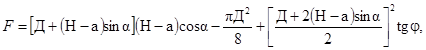
где Д - наружный диаметр трубопровода с учетом толщины изоляционного покрытия, м;
Н, а - конструктивные размеры утяжелителей, определяемые по ТУ 102-300-81, м;
a - угол развала утяжелителей, принимаемый равным 10° для всех диаметров трубопровода;
j - расчетный угол внутреннего трения грунта обратной засыпки, принимаемый по материалам изысканий с учетом СНиП 2.02.01-83.
Примечание. Площадь поперечного сечения призмы грунта может быть увеличена при выполнении специальных конструктивных мероприятий, обеспечивающих фиксацию его объема.
2.4. Расчетный объемный вес грунта во взвешенном состоянии определяется по формуле
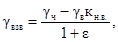
где gч - удельный вес частиц грунта, принимаемый равным 26 - 27 кН/м3;
gв - удельный вес воды, кН/м3;
кн.в. - коэффициент надежности устойчивости положения трубопровода против всплытия, принимаемый для участков болот и за границами производства подводно-технических работ равным 1,05;
e - расчетный коэффициент пористости грунта, принимаемый по приложению 1.
2.6. При проверке общей устойчивости трубопровода в продольном направлении расчетную удерживающую нагрузку от грунта определяют согласно пп. 2.1 - 2.5 при условии gn = 1 и кн.в = 1,0.
2.7. Удерживающую способность группы утяжелителей типа УБО с учетом использования грунта засыпки определяли по выражению
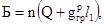
где n - число утяжелителей в группе;
Q - вес в воде одного утяжелителя, кН;
l1 - длина одного утяжелителя, м.
2.8. Расстояние между концом предыдущей и началом последующей группы утяжелителей определяется с учетом заданного числа утяжелителей в группе по формуле
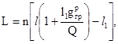
где l - шаг между утяжелителями при равномерной их установке, м.
Это расстояние в соответствии с требованиями СНиП III.42-80 не должно превышать 25 м.
2.9. Расстояние между центрами групп утяжелителей определяется по выражению
2.10. Пересчет расстояний между утяжелителями (центрами групп утяжелителей), анкерными устройствами и др. для их взаимозаменяемости выполняется следующим образом:
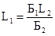
где L1, L2 - расстояние соответственно между балластирующим (удерживающим) конструкциями, предлагаемыми к применению и по проекту, м;
Б1, Б2 - балластирующая (удерживающая) способность конструкций соответственно, предлагаемых к применению и по проекту, кН.
3.1. До начала производства работ по балластировке трубопроводов утяжелителями необходимо:
уложить трубопровод в траншею требуемых габаритов;
уширить траншею в местах расположения групп утяжелителей одноковшовым экскаватором;
спланировать места для автокрана или крана-трубоукладчика для монтажа групп утяжелителей на трубопроводе;
создать необходимый запас утяжелителей;
выполнить раскладку утяжелителей в местах их навески на трубопровод.
3.2. Балластировка трубопроводов утяжелителями УБО с использованием балластирующей способности грунта осуществляется в следующей технологической последовательности:
монтаж утяжелителей УБО групповым методом (последовательность монтажа приведена на рис. 2) с образованием полости для размещения минерального грунта;
заполнение полости грунтом одноковшовым экскаватором;
окончательная засыпка групп утяжелителей бульдозером.
Схема организации работ по применению групповой установки утяжелителей типа УБО с использованием балластирующей способности грунта представлена на рис. 3.
3.3. Бригада, осуществляющая балластировку трубопроводов утяжелителями УБО с использованием дополнительной балластирующей способности грунта, состоит из 10 чел.:
машинист крана-трубоукладчика - 2;
машинист одноковшового экскаватора - 1;
помощник машиниста одноковшового экскаватора - 1;
слесарь трубоукладчика - 6.
3.4. Работы по балластировке трубопроводов утяжелителями типа УБО следует осуществлять в соответствии с «Типовой технологической картой на балластировку магистральных трубопроводов диаметром 1420 мм утяжелителями УБО-1», составленной ВНИИПКтехоргнефтегазстроем.
3.5. Контроль качества производства работ по балластировке трубопроводов утяжелителями типа УБО с использованием грунта должен осуществляться в соответствии с требованиями СНиП III-42-80 «Магистральные трубопроводы. Правила производства и приемки работ».
Рис. 2. Последовательность монтажа утяжелителей типа УБО:
а - транспортировка утяжелителей к месту монтажа; б - подготовка утяжелителей к сборке; в - сборка блоков УБО в комплект; г - навеска утяжелителей на трубопровод
Рис. 3. Схема организации работ по балластировке трубопровода утяжелителями типа УБО с использованием дополнительной балластирующей способности грунта:
I - разгрузка утяжелителей; II - навеска утяжелителей групповым методом; III - заполнение полости групп утяжелителей минеральным грунтом; IV - окончательная засыпка трубопровода; 1 - трубопровод; 2 - траншея; 3 - отвал грунта; 4 - группа утяжелителей; 5 - склад утяжелителей; 6 - автомобиль для доставки утяжелителей; 7 - трубоукладчик; 8 - одноковшовый экскаватор; 9 - бульдозер
4.1. При применении групповой установки железобетонных утяжелителей типа УБО с использованием балластирующей способности грунта следует руководствоваться правилами техники безопасности, изложенными в следующих документах:
СНиП III-4-80 «Техника безопасности в строительстве». М., Стройиздат, 1978;
«Правила техники безопасности при строительстве магистральных стальных трубопроводов». М., «Недра», 1982;
«Правила устройства и безопасности эксплуатации грузоподъемных кранов». М., «Недра», 1970.
4.2. К выполнению работ по балластировке трубопроводов железобетонными утяжелителями могут быть допущены рабочие:
прошедшие предварительное и периодическое медицинское обследование в сроки, установленные Минздравом СССР;
достигшие возраста 18 лет, обученные безопасным методам труда и приемам ведения работ, прошедшие экзаменационную проверку знаний, методов и приемов производства работ, документально оформленную с выдачей соответствующего удостоверения;
прошедшие вводный инструктаж по технике безопасности непосредственно на рабочем месте.
4.3. При установке утяжелителей на трубопровод во избежание обрушения грунта в траншею автокраны или краны-трубоукладчики следует устанавливать за пределами призмы обрушения. При этом присутствие посторонних лиц в зоне работы машин и механизмов не допускается.
4.4. Работа и передвижение механизмов вблизи линий электропередачи (не менее 30 м по горизонтали) должна производиться под непосредственным руководством начальника участка. В этом случае машинисту автокрана или крана-трубоукладчика выдается наряд-допуск на особо опасные работы.
4.5. При разгрузке утяжелителей, укладке их в штабель, транспортировке к месту монтажа и навеске их на трубопровод запрещается:
допускать на место производства грузоподъемных работ посторонних лиц;
поднимать на крюке утяжелитель без проверки правильности строповки и надежности действия тормоза крановой лебедки;
находиться под утяжелителем или в зоне действия автокрана или крана-трубоукладчика (кроме стропальщиков или исполнителей работ);
использовать негодные или непроверенные стропы;
опускать железобетонные утяжелители на трубопровод рывками.
4.6. Грузозахватные приспособления должны исключать самопроизвольное отделение груза и обеспечивать его устойчивость при подъеме и перемещении.
|
Литологический тип грунта |
Инженерно-геологический вид грунта |
Плотность сухого грунта ρd, г/см3 |
Нормативное значение удельного сцепления Cn, МПа |
Нормативное значение угла внутреннего трения, jn, град. |
Расчетное значение коэффициента пористости e |
Объемный вес грунта с учетом взвешивающего влияния воды gвзв, тс/м3 |
|
Пески средней крупности, мелкие и пылеватые |
влажные и маловлажные |
1,35 - 1,55 1,50 |
- |
21 - 40 |
0,97 - 0,72 0,77 |
0,72 - 0,76 0,75 |
|
Водонасыщенные |
1,15 - 1,25 1,20 |
- |
31 - 33 |
1,31 - 1,13 1,22 |
||
|
Пески крупные |
Влажные и маловлажные |
1,6 - 1,66 |
- |
40 - 42 |
0,68 - 0,72 |
0,97 |
|
Связные грунты (супеси, суглинки, глины) |
Полутвердые и твердые |
1,35 - 1,65 1,40 |
0,03 |
25 - 35 |
1,08 - 0,75 0,87 |
0,82 - 0,98 0,91 |
|
Мягкие и тугопластичные |
1,20 - 1,47 1,40 |
0,001 |
12 - 18 |
1,26 - 0,86 0,94 |
0,76 - 0,92 0,88 |
|
|
Текучие |
1,1 - 1,4 1,38 |
- |
12 - 18 |
1,44 - 0,91 0,94 |
0,69 - 0,88 0,86 |
Трубопровод диаметром 1420 мм по проекту забалластирован утяжелителями типа УБО-1 с шагом 1,7 м. Длина участка равна 1000 м. Необходимо определить параметры группового метода балластировки с учетом балластирующей способности грунта засыпки (песок мелкий, водонасыщенный, коэффициент пористости e = 0,75, расчетный угол внутреннего трения грунта ненарушенной структуры j = 25°).
1. Определяем по формуле (3) площадь поперечного сечения призмы грунта:
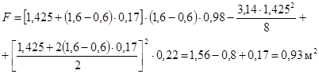
2. Определяем расчетный объемный вес грунта во взвешенном состоянии по выражению (4):
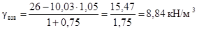
3. Определяем нормативную удерживающую нагрузку от грунта:
gнгр = 1,12 · 8,84 = 9,9 кН/м.
4. Расчетная удерживающая нагрузка определяется по формуле (1):
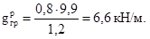
5. Расстояние между концом предыдущей и началом последующей групп согласно (6) при числе утяжелителей в группе n = 15 будет:
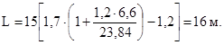
6. Расстояние между центрами групп утяжелителей будет (7):
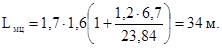
СОДЕРЖАНИЕ
|
3. Технология и организация производства работ. 5 Приложение 1. Характеристики грунтов нарушенной структуры в первый год эксплуатации газопровода. 8 |